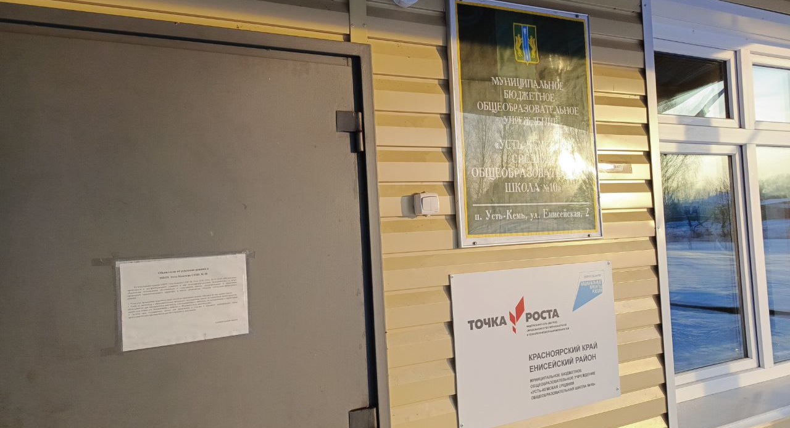

.jpg)
Виртуальный музей: Открывая двери в мир культурного наследия
В современном мире, где технологии проникают во все сферы жизни, виртуальные музеи становятся важным источником образования, развлечения и погружения в культурное наследие. Виртуальный музей - это цифровая платформа, которая предлагает посетителям возможность познакомиться с экспонатами и историей, не покидая своего дома. Одним из ключевых преимуществ виртуальных музеев является доступность. Люди со всего мира могут посещать музейные выставки и коллекции в любое время, из любой точки земного шара, имея лишь доступ к интернету. Это особенно важно для тех, кто физически не в состоянии посещать музеи из-за различных ограничений или препятствий. Виртуальные музеи также предоставляют уникальные возможности для обучения. Они могут быть использованы как образовательные ресурсы в учебных заведениях, позволяя учащимся изучать историю, искусство и культуру в интерактивной форме. Виртуальные экспозиции часто сопровождаются образовательными материалами, интерактивными играми и видеорассказами, что делает процесс обучения более увлекательным и эффективным. Кроме того, виртуальные музеи способствуют сохранению культурного наследия. Цифровизация экспонатов позволяет сохранить их в неизменном виде на долгие годы и сделать доступными для широкой аудитории. Это особенно актуально для уникальных и редких артефактов, которые могут быть утрачены из-за времени, природных катастроф или человеческого вмешательства.

Виртуальный музей школы: Открытие мира знаний и творчества
В современном образовании виртуальные музеи школ становятся неотъемлемой частью учебного процесса, играя ключевую роль в обогащении учебного опыта и стимулировании интереса к знаниям и творчеству. Создание виртуального музея школы имеет целый ряд важных причин. Во-первых, это расширение возможностей обучения. Виртуальный музей предоставляет ученикам и учителям доступ к широкому спектру образовательных ресурсов, которые могут быть использованы для изучения различных предметов и тем. Благодаря цифровой платформе ученики могут углубленно изучать историю, искусство, науку и другие области знаний, обогащая свой учебный опыт. Во-вторых, виртуальный музей школы способствует сохранению и популяризации культурного наследия учебного заведения. Здесь могут быть представлены не только исторические артефакты и экспонаты, связанные с историей школы, но и творческие работы учеников, которые отражают их достижения и индивидуальные таланты. Это помогает сохранить и передать наследие школы следующим поколениям, а также вдохновляет учеников на творческое самовыражение и саморазвитие. Третья причина создания виртуального музея школы - это развитие информационной грамотности учеников. Пользование цифровыми технологиями и интернет-ресурсами становится неотъемлемой частью современной жизни, и виртуальный музей предоставляет возможность ученикам приобрести навыки работы с цифровыми инструментами, ориентироваться в информационном пространстве и критически оценивать информацию. В целом, создание виртуального музея школы способствует расширению образовательных возможностей, сохранению культурного наследия и развитию информационной грамотности учеников. Это инновационный подход, который позволяет школам эффективно адаптироваться к вызовам современного мира и обеспечить качественное образование на всех этапах учебного процесса.